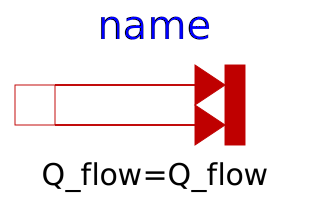

.
Modelica
.
Thermal
.
HeatTransfer
.
Sources
Information
Contents
Name
Description
FixedTemperature
Fixed temperature boundary condition in Kelvin
PrescribedTemperature
Variable temperature boundary condition in Kelvin

FixedHeatFlow
Fixed heat flow boundary condition
PrescribedHeatFlow
Prescribed heat flow boundary condition
Generated at 2018-12-17T10:58:42Z by
OpenModelica 1.14.0~dev-43-g4ff0ebd